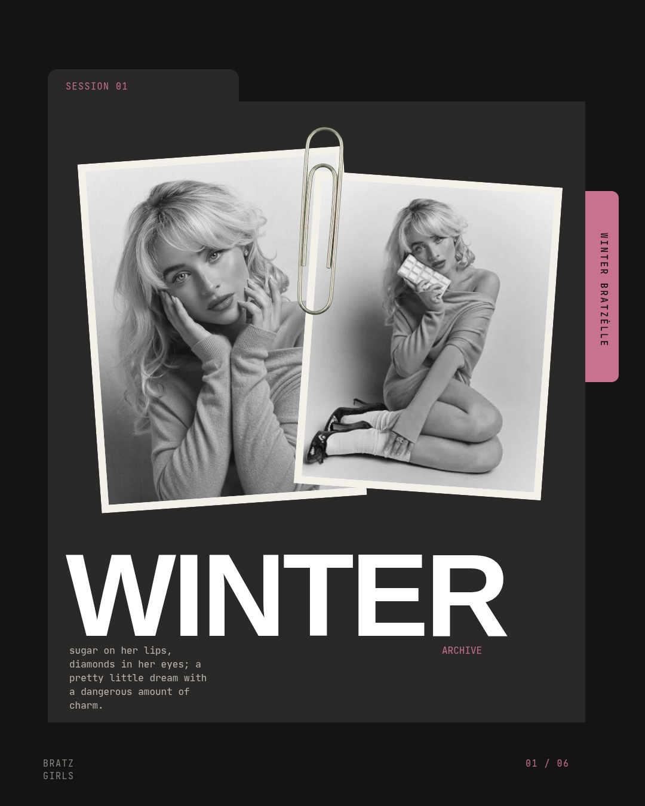
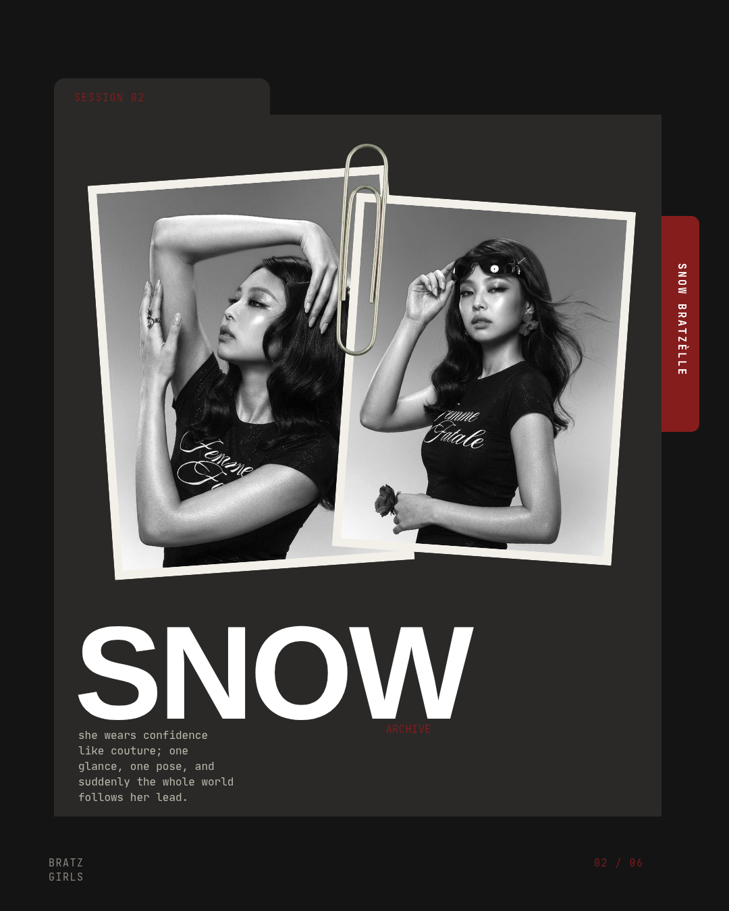
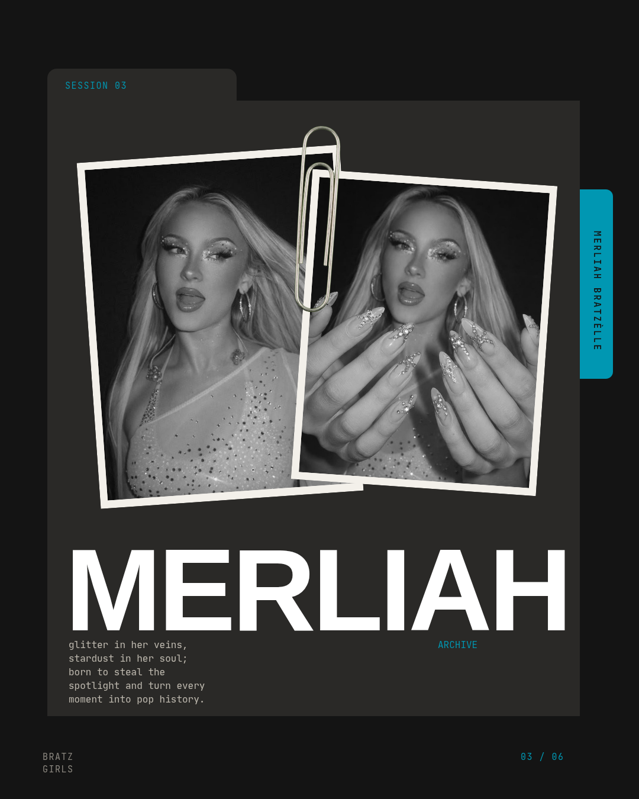
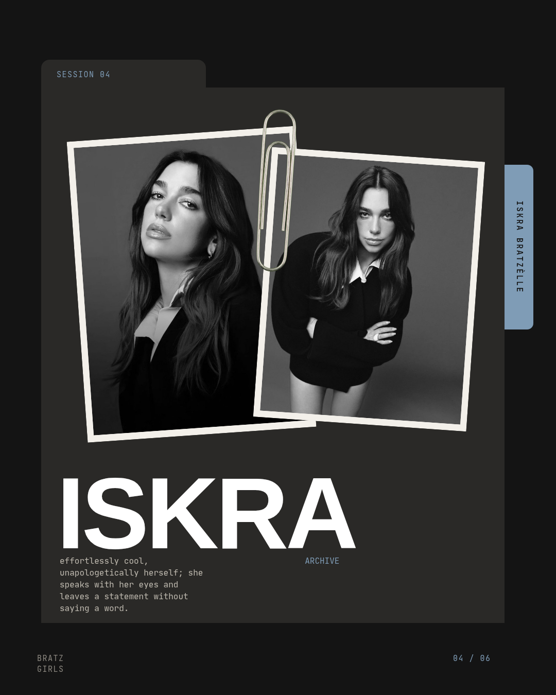
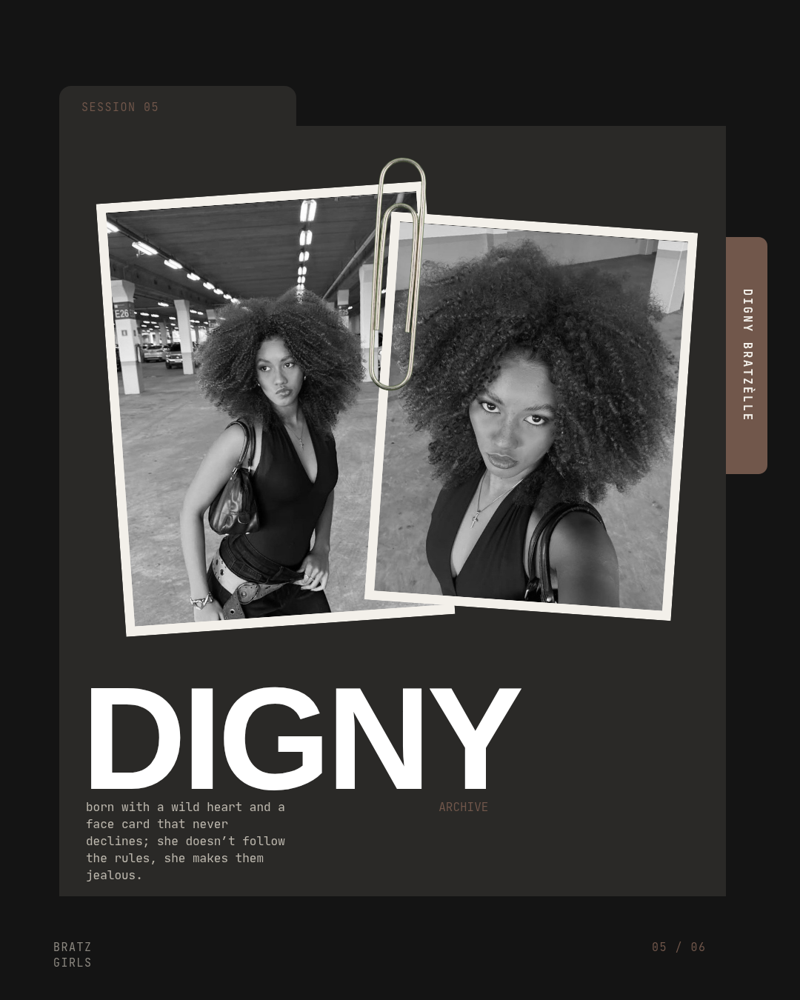
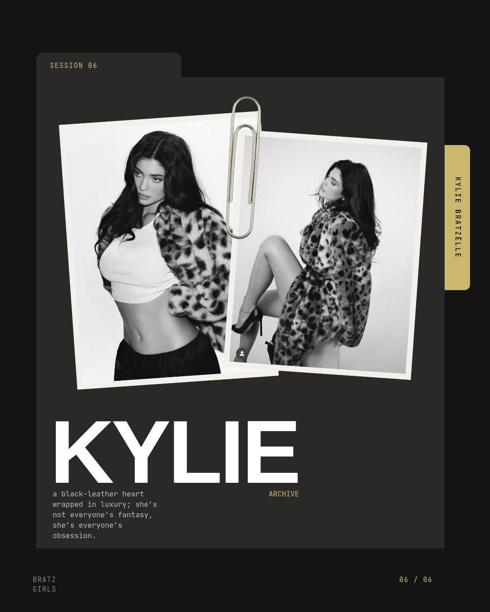

Se Mean Girls fosse uma linhagem de bonecas Bratz, seriam as Bratzèlle:
seis garotas, um sobrenome, beleza de sobra e personalidades impossíveis
de ignorar. Entre glamour, rivalidades, segredos e lealdades questionáveis,
elas sabem que ser icônica é um dom — e dominar o próprio mundo é uma arte.
Bonitas demais para passar despercebidas. Perigosas demais para serem
subestimadas. Afinal, nessa família, ninguém nasceu para ser figurante.
Six dolls. Six personalities.
Meet the Bratzèlle.

Winter
The golden girl

Snow
The ice queen

Merliah
The summer girl

Iskra
The it girl

Digny
The untouchable

Kylie
The rebel doll
𝐓𝐇𝐄 𝘽𝙍𝘼𝙏𝙕𝙀𝙇𝙇𝙀𝙎. 💋
Born in Tuscany, with Tuscan nationality, Iskra, Kylie, Winter, Merliah, Digny, and Chiara are six women, six personalities, and one 𝙨𝙞𝙨𝙩𝙚𝙧𝙝𝙤𝙤𝙙 that no one in this world could ever break. The Bratzelles are known for their 𝙞𝙣𝙩𝙚𝙡𝙡𝙞𝙜𝙚𝙣𝙘𝙚, 𝙖𝙩𝙩𝙞𝙩𝙪𝙙𝙚, 𝙘𝙤𝙣𝙛𝙞𝙙𝙚𝙣𝙘𝙚, and undeniable presence. They don't need to prove anything to anyone, let alone put other women down to make themselves feel superior. They know who they are, they know their worth, and they simply live as the women they were born to be.
𝙐𝙣𝙙𝙖𝙪𝙣𝙩𝙚𝙙, gorgeous, sexy, and in complete control of their own lives, each has her own style, opinions, and unique way of commanding any room she walks into. They don't compete with one another, fight for attention, or see each other as rivals. 𝙒𝙝𝙚𝙣 𝙤𝙣𝙚 𝙤𝙛 𝙩𝙝𝙚𝙢 𝙧𝙞𝙨𝙚𝙨, 𝙩𝙝𝙚𝙮 𝙖𝙡𝙡 𝙧𝙞𝙨𝙚 𝙩𝙤𝙜𝙚𝙩𝙝𝙚𝙧. They are true sisters, loyal, devoted, and bound by a connection that goes far beyond blood. They fight for themselves, protect one another, and, if necessary, take on the entire world for the sake of their sisterhood.
The Bratzelles' lives unfold between Tuscany, Egypt, and Miami Beach, but the entire world is practically their playground. With 𝙢𝙖𝙣𝙨𝙞𝙤𝙣𝙨 scattered across different countries, including Norway and various corners of Italy, they have a home for every climate, every landscape, and every chapter of their lives. Whether it's a paradise beach, the heart of nature, or a city overflowing with luxury, they always have a place of their own.
𝙏𝙝𝙚 𝘽𝙧𝙖𝙩𝙯𝙚𝙡𝙡𝙚𝙨 𝙡𝙞𝙫𝙚 𝙞𝙣 𝙩𝙝𝙚𝙞𝙧 𝙤𝙬𝙣 𝙬𝙤𝙧𝙡𝙙. A world where other people's opinions mean nothing, where none of them needs a man, money, status, or anyone else's approval to recognize her own greatness. They are already great. They always have been. They don't need to compete, beg for space, or prove that they deserve to be where they are.
In the end, they are six women who choose each other every single day. Six 𝙨𝙞𝙨𝙩𝙚𝙧𝙨 who fight, protect, defend, and stand together. Because the Bratzelles' greatest strength lies not in their mansions, their beauty, or the power they carry, but in the certainty that 𝙣𝙤𝙣𝙚 𝙤𝙛 𝙩𝙝𝙚𝙢 𝙬𝙞𝙡𝙡 𝙚𝙫𝙚𝙧 𝙝𝙖𝙫𝙚 𝙩𝙤 𝙛𝙖𝙘𝙚 𝙩𝙝𝙚 𝙬𝙤𝙧𝙡𝙙 𝙖𝙡𝙤𝙣𝙚 𝙖𝙨 𝙡𝙤𝙣𝙜 𝙖𝙨 𝙩𝙝𝙚 𝙤𝙩𝙝𝙚𝙧𝙨 𝙖𝙧𝙚 𝙗𝙮 𝙝𝙚𝙧 𝙨𝙞𝙙𝙚.
𝘽𝙧𝙖𝙩𝙯𝙚𝙡𝙡𝙚𝙨 𝙙𝙤𝙣'𝙩 𝙘𝙤𝙢𝙥𝙚𝙩𝙚 𝙬𝙞𝙩𝙝 𝙚𝙖𝙘𝙝 𝙤𝙩𝙝𝙚𝙧. 𝘽𝙧𝙖𝙩𝙯𝙚𝙡𝙡𝙚𝙨 𝙪𝙣𝙞𝙩𝙚. 𝘼𝙣𝙙 𝙖𝙜𝙖𝙞𝙣𝙨𝙩 𝙖𝙡𝙡 𝙨𝙞𝙭 𝙤𝙛 𝙩𝙝𝙚𝙢, 𝙞𝙩'𝙨 𝙗𝙚𝙨𝙩 𝙣𝙤𝙩 𝙩𝙤 𝙚𝙫𝙚𝙣 𝙩𝙧𝙮.